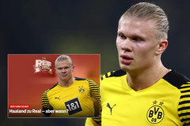
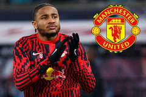
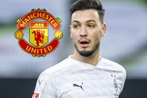

Hanland đồng ý đến Real Madrid vào hè 2023
Tờ Bild của Đức đưa tin, Erling Haaland đã đồng ý gia nhập Real Madrid và chỉ còn chờ thông báo chính thức về thỏa thuận
Thể thao 17/02/2022

MU lợi thế ký NKunku, Liverpool lấy Zaniolo
MU dẫn đầu ký Nkunku, Real Madrid mua lại Reguilon, Liverpool muốn có Zaniolo là những tin bóng đá chính hôm nay, 15/2.
Thể thao 17/02/2022

MU ký sao đa năng. Tottenham phải giữ Conte
MU nhắm sao đa năng ở Bundesliga, Tottenham phải giữ Conte, Pochettino rời PSG vào cuối mùa là những tin chuyển nhượng mới nhất hôm nay, 15/2.
Thể thao 17/02/2022
MU tiến gần Tielemans, Liverpool bán Salah
MU tiến gần ký Tielemans, Arsenal muốn có Rafael Leao, Liverpool cân nhắc bán Salah là những tin bóng đá chính hôm nay, 14/2.
Thể thao 17/02/2022
MU gia hạn De Gea, đội trưởng Chelsea về Barca
MU ‘thưởng’ De Gea hợp đồng mới, PSG lôi kéo Kante, đội trưởng Chelsea, Azpilicueta gia nhập Barca là những tin chuyển nhượng mới nhất hôm nay, 14/2.
Thể thao 17/02/2022
MU tiếp cận Luis Enrique, Chelsea ký De Ligt
MU muốn thuê HLV Luis Enrique, Atletico đàm phán Dybala, Chelsea hỏi mua De Ligt là những tin bóng đá chính hôm nay, 12/2
Thể thao 17/02/2022